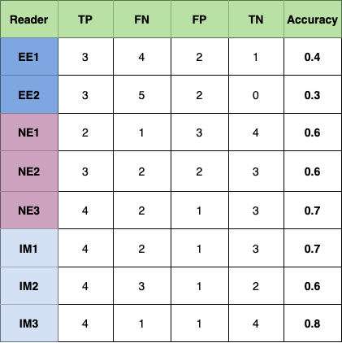

Pyramid-focus-augmentation (PYRA): medical image segmentation with step-wise focus
In recent years,artificial intelligence (AI) has been used for the detection and classification of colon polyps.
However, small datasets are a major obstacle, in particular, for supervised machine learning (ML).
Thus, data collection for ML approaches remains challenging, and synthetic data augmentation, using models/tools such as generative adversarial networks (GAN), may overcome this hurdle.
To determine the clinical utility of synthesized images in endoscopy, we generated colon polyp images and assessed their clinical value and quality
Summary of quationeare evaluated by 8 experts.
